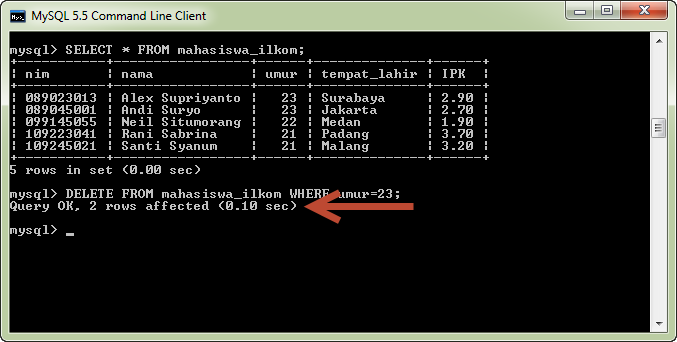

Dalam tutorial PHP MySQL kali ini kita akan membahas 2 fungsi (function) PHP yang digunakan untuk menampilkan jumlah baris dari Tabel MySQL. Fungsi yang akan kita bahas adalah mysql_num_rows dan mysql_affected_rows.
Fungsi mysql_num_rows() digunakan untuk mengetahui berapa banyak jumlah baris hasil pemanggilan fungsi mysql_query(). Fungsi ini membutuhkan 1 buah argumen, yakni variabel resources hasil dari fungsi mysql_query().
Berikut adalah contoh penggunaannya:
1
2
3
4
5
6
7
8
9
10
11
12
13
14
15
16
17
18
19
20
21 |
<?php//buat koneksi dengan MySQL$link=mysql_connect('localhost','root','');//jika koneksi gagal, langsung keluar dari PHPif (!$link){ die("Koneksi dengan MySQL gagal");}//gunakan database universitas$result=mysql_query('USE universitas');if (!$result){ die("Database mahasiswa gagal digunakan");}//jalankan query$result=mysql_query("SELECT * FROM mahasiswa_ilkom");echo "Total mahasiswa berjumlah ".mysql_num_rows($result)." orang.";?> |
Jika kode diatas dijalankan, hasil yang didapat adalah sebagai berikut:
1 |
Total mahasiswa berjumlah 5 orang |
Fungsi mysql_num_rows() ini cocok digunakan jika yang kita inginkan hanya konfirmasi mengenai ada atau tidak sebuah data di dalam database.
Fungsi mysql_affected_rows() digunakan untuk mengetahui jumlah baris tabel yang dikenai proses oleh query MySQL. Hasil ini biasanya diperlukan jika kita ingin mengetahui dengan lebih detail tentang proses yang berlangsung.
Sebagai contoh, kita ingin melakukan operasi DELETE kepada sebuah tabel. Hal ini bisa dilakukan dengan fungsi mysql_query. Namun kita tidak bisa mengetahui berapa jumlah baris yang telah dihapus.
Jika menggunakan MySQL, informasi ini ditampilkan langsung setelah query:

Untuk mengambil informasi ini dari PHP, kita menggunakan fungsi mysql_affected_rows(). Berikut adalah contoh penggunaannya:
1
2
3
4
5
6
7
8
9
10
11
12
13
14
15
16
17
18
19
20
21 |
<?php//buat koneksi dengan MySQL$link=mysql_connect('localhost','root','');//jika koneksi gagal, langsung keluar dari PHPif (!$link) { die("Koneksi dengan MySQL gagal"); }//gunakan database universitas$result=mysql_query('USE universitas');if (!$result){ die("Database mahasiswa gagal digunakan");}//jalankan query$result=mysql_query("DELETE FROM mahasiswa_ilkom WHERE umur='23'");echo "Data yang di hapus sebanyak: ".mysql_affected_rows()." orang.";?> |
Dan, hasil yang ditampilkan adalah:
1 |
Data yang di hapus sebanyak: 2 orang. |
Baik fungsi mysql_num_rows dan mysql_affected_rows sering digunakan di dalam situasi dimana kita membutuhkan informasi terkait query MySQL yang dijalankan. Kedua fungsi ini melengkapi fungsi-fungsi lain yang telah kita pelajari di dalam tutorial PHP MySQL ini.
Pada tutorial PHP MySQL selanjutnya, kita akan membahas cara menampilkan tabel MySQL dengan menggunakan objek (fungsi mysql_fetch_object).